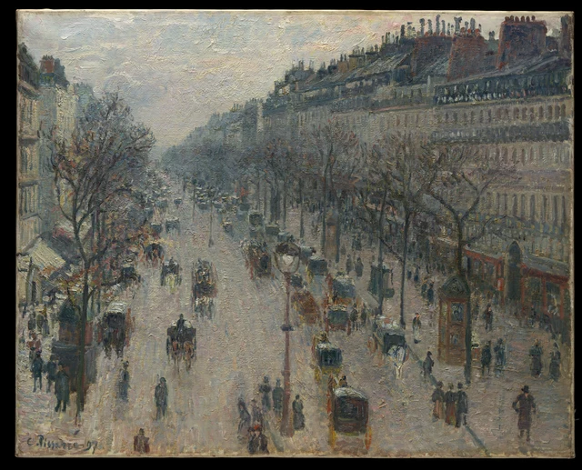
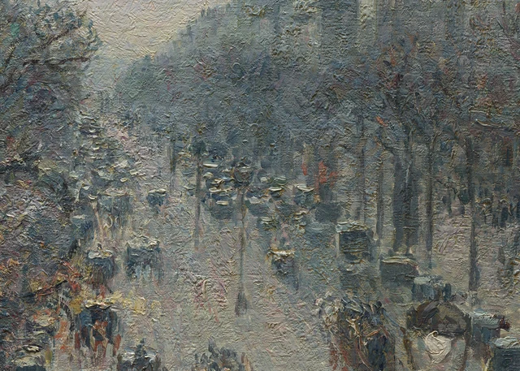
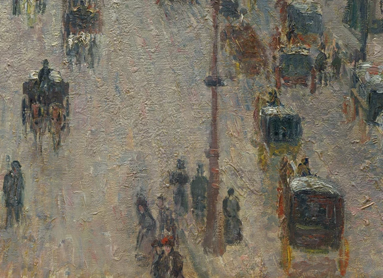
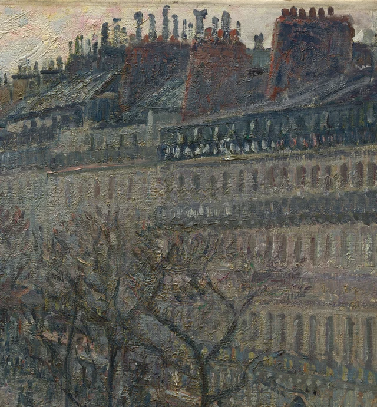

먼저 길을 따라 시선을 옮겨 보자. 가까이 있는 마차들 사이로 연한 회색과 분홍색, 크림빛 노란색의 노면이 넓게 드러난다. 먼 곳으로 갈수록 어두운 마차 몸체는 작아지고 서로의 간격도 좁아진다. 길은 화면 중앙에서 약간 왼쪽으로 모여들지만, 마차의 흐름이 그곳에서 끝날 것 같지는 않다. 오른쪽 보도에서는 어둡게 그려진 작은 인물들이 몇 무리로 흩어져 있다. 그보다 왼쪽의 가까운 인물 중 일부는 화면 아래 경계에 잘려 있다. 눈에 보이는 것은 거리의 한 구간이다. 그런데도 그 너머에서 오가는 움직임이 계속될 듯하다.

이 글에서 주목하려는 것은, 안정된 높은 시점으로 하나의 박자에 맞춰 움직이지 않는 도시의 시간을 그려 내는 방식이다. 건물과 길 가장자리, 가로수의 열은 오랫동안 유지되는 방향을 만든다. 반면 마차와 사람, 작은 색점 사이의 고르지 않은 간격은 그 방향에 끊임없이 변화를 준다. 피사로는 눈에 띄는 큰 사건 하나를 골라 장면의 중심에 놓지 않고도, 정지한 캔버스에서 흐름이 이어지는 힘을 느끼게 한다.
1897년 초, 피사로는 파리의 그랑 오텔 드 뤼시에 머물며 창밖의 대로를 바라보았다. 메트로폴리탄 미술관의 기록에 따르면, 그는 2월부터 4월까지 몽마르트르 대로를 그린 그림 14점과 이탈리앵 대로를 그린 그림 2점을 제작했다. 이름과 달리 이 대로는 몽마르트르 언덕에 있지 않다. 또한 오스만이 19세기에 새로 낸 길도 아니다. 파리시의 거리 역사 자료는 이 대로가 완성된 해를 1705년으로 기록한다. 이미 있던 길로 19세기의 상업과 교통이 들어온 것이다. 이 차이는 중요하다. 거듭 바뀌는 도시의 생활과 그 생활을 받쳐 주는 길이 꼭 같은 시점에 시작된 것은 아니기 때문이다. 메트로폴리탄 미술관의 작품 설명, 내셔널 갤러리의 위치 및 연작 설명, 파리시 거리 역사 자료 4쪽
창가에서 내다보는 거리의 깊이
그림에는 창틀이 나오지 않는다. 그래도 사물의 윗면이 보인다는 점에서 시선이 높은 곳에 있음을 알 수 있다. 가까운 마차에서는 밝은 덮개가 눈에 잘 들어오고, 그 아래로 어두운 몸체가 놓인다. 건물의 지붕도 넓은 면으로 펼쳐져 보인다. 보행자는 가늘고 길쭉한 작은 형체가 된 반면, 길은 화면에서 상당히 넓은 면적을 차지한다. 이 자리에서는 눈앞의 길 한 구간과 그 길이 도시 안쪽으로 뻗어 가는 모습을 함께 볼 수 있다.
오른쪽 건물은 화면의 큰 부분을 차지한다. 처마의 돌출된 선과 발코니, 층마다 이어지는 창문들이 비스듬히 먼 곳으로 모여든다. 왼쪽에서는 건물의 폭이 훨씬 적게 드러나고, 큰 나뭇가지가 그 앞을 가로지른다. 양쪽은 대칭을 이루지 않지만, 모두 중앙보다 조금 왼쪽에 있는 거리의 깊은 곳으로 눈길을 보낸다. 위쪽의 밝은 하늘은 아래로 갈수록 좁아지고, 아래쪽의 밝은 길은 위로 갈수록 좁아진다. 멀리 있는 청회색 부분은 둘 사이의 이음매처럼 보인다.
지붕을 따라가면 힘 있게 뻗는 사선의 질서가 느껴진다. 마차의 덮개를 따라가면 연결 방식이 더 잘게 끊긴다. 밝은 점들이 한데 모여 있는가 하면, 잠깐 간격을 건너뛰고 다시 나타난다. 나무줄기와 가로등 기둥은 여기에 여러 묶음의 수직선을 더한다. 먼 곳으로 갈수록 짧아지고 서로 가까워지지만, 규칙적인 울타리처럼 되지는 않는다. 하나의 길 안에서 여러 단서가 거리의 깊이를 거듭 뒷받침한다. 피사로는 모든 사물의 윤곽을 완전히 닫지 않고도, 각각의 위치를 설득력 있게 보여 준다.

거리 저편에는 시선을 받아 줄 만큼 특별히 환한 기념물이 없다. 멀리 볼수록 마차와 사람을 하나하나 구별하기는 어려워진다. 그런데도 길의 방향은 분명하다. 그래서 원경이 주는 것은 반드시 도착해야 할 한 지점보다, 앞쪽으로 길이 더 이어져 있다는 느낌이다. 눈길은 그 길을 따라갈 수도 있고, 가까이 있는 크고 또렷한 마차에 이끌려 되돌아올 수도 있다. 화면의 깊이와 시선의 왕복이 함께 작동한다.
고르지 않은 박자로 이어지는 교통
가까운 곳에서 특히 살펴볼 만한 부분은 마차가 채우지 않은 공간이다. 화면 아래쪽의 왼편에는 우리를 향한 마차 한 대가 있고, 말의 가느다란 다리가 밝은 노면으로 뻗어 있다. 맞은편에서는 더 큰 어두운 마차 몸체들이 이어지고, 그 위에는 밝은 덮개가 놓인다. 몸체 아래쪽과 바퀴 주변에는 빨간색과 노란색 붓자국이 흩어져 있다. 두 무리 사이로 길의 넓고 밝은 부분이 남아 있다.
이 빈 곳 덕분에 마차의 흐름에는 숨 쉴 틈이 생긴다. 만약 마차들이 균일한 간격으로 빽빽한 띠를 이루었다면, 우리는 먼저 정돈된 무늬를 보았을지도 모른다. 여기서는 어두운 덩어리 사이의 거리가 넓어졌다 좁아지며, 시선도 빨라지고 멈췄다가 다시 이어진다. 먼 곳의 조밀함과 가까운 곳의 성김은 원근감도 만든다. 같은 길이라도 멀어질수록 사물 사이의 간격이 화면에서 차지하는 폭은 작아진다. 리듬과 공간이 서로를 강화하는 셈이다.

마차와 사람은 같은 모양으로 간략화되어 있지 않다. 마차 몸체는 대체로 넓고 두툼한 어두운 덩어리이며, 윗부분에 밝은 가로 붓자국이 얹혀 있다. 사람은 흔히 가늘고 긴 어두운 세로 자국으로 나타나고, 머리는 아주 작은 부분만 차지한다. 그 아래는 다리로 갈라지기도 하고, 긴 옷의 형태로 이어지기도 한다. 가까운 인물의 모자나 옷자락, 옷깃에서는 때때로 차이가 드러나지만, 멀어지면 그런 차이는 빠르게 줄어든다. 형태의 구별만으로도 차도와 보도에는 서로 다른 활동의 밀도가 생긴다.
흐름을 느끼게 하려면 모든 사람이 명백히 걷는 자세를 취해야 하는 것은 아니다. 몇 사람이 가까이 있고, 그다음에는 빈틈이 있으며, 다시 혼자 있는 사람이 나타난다. 그 순서를 따라 우리는 보도를 읽어 나간다. 오른쪽의 적갈색 가판대처럼 보이는 구조물과 어두운 가로등 기둥은 이 작은 사람들에게 비교적 오래 유지되는 기준점이 된다. 군중이 특정한 주인공을 둘러싸고 있지 않으며, 가까운 마차 한 대가 사건의 중심으로 특별히 부각되지도 않는다. 이 그림의 주제는 오가는 움직임 자체다.
마차의 방향, 사람의 형태, 좁아졌다 넓어지는 간격이 어우러져 이 거리의 움직임이 계속되는 듯 보인다. 눈길은 멈추는 자리와 이어지는 흐름을 차례로 만나고, 그 관계 속에서 도시의 시간이 펼쳐진다.
활기 있는 붓자국으로 세워진 건물
거리의 작은 사람과 마차에서는 활발한 붓질이 쉽게 눈에 띈다. 하지만 오른쪽 건물도 그만큼 자세히 볼 필요가 있다. 건물들은 견고해 보이지만, 창문 상당수는 끊어진 어두운 자국에 가깝다. 창문 줄 사이로 크림색과 회녹색, 연분홍 벽면이 드러난다. 층을 나누는 가로선이 흩어진 자국들을 다시 건물의 연속으로 묶어 준다. 형태를 유지할 만큼 질서는 분명하고, 그 표면에는 계속 변화가 있다.
지붕 위의 적갈색 굴뚝에서는 색조와 밝기가 다른 가느다란 관들이 솟아 있다. 밝은 하늘을 배경으로 반복되는 이 작은 수직 형태들은 높이와 간격, 색이 저마다 다르다. 아래의 창문보다 한결 느슨한 배열이다. 넓은 청회색 지붕 면이 이들을 받치고, 붉은 굴뚝 덩어리는 건물의 윗선에 몇 개의 묵직한 쉼표를 놓는다. 거리에서 만난 반복과 변화가 높은 곳에서는 다른 크기로 다시 나타난다.

나뭇가지는 특히 중요하다. 굵고 어두운 줄기에서 갈라져 나온 가지들은 건물 앞에서 휘고 교차하며, 창문의 반복적인 박자를 끊는다. 어떤 잔가지는 가늘게 이어지고, 어떤 것은 짧은 어두운 선들을 연결해 그렸다. 그 틈으로 밝은 벽면이 여전히 보인다. 나무를 하나의 갈색 실루엣으로 뭉뚱그리지 않은 것이다. 가지 사이의 빈 공간 덕분에 뒤의 건물도 계속 읽힌다. 잎이 적은 겨울이라는 조건이 식물의 가지 구조와 인공 건축의 규칙적인 배치를 한자리에서 드러내 준다.
건물을 마차 흐름 뒤에 놓인 움직이지 않는 무대로만 생각하면, 그림이 지닌 활력의 상당 부분을 놓치게 된다. 건축의 관계는 안정적이지만, 그 관계를 성립시키는 붓자국은 길 위의 자국만큼이나 많고 활발하다. 피사로는 고정된 사물을 모두 매끈하게 그리고 말과 사람을 모두 흐릿하게 그리지 않는다. 둘이 활기 있는 그림 표면을 공유하게 한 다음, 방향과 비례, 연결 방식의 차이를 통해 건물은 서 있고 교통은 이어지도록 보이게 한다.
덕분에 화면은 정밀한 도시 모형과 그 위에 급하게 덧붙인 사람과 마차라는 두 가지 표현으로 갈라지지 않는다. 건물과 길은 비슷한 회화 언어에서 생겨나되, 서로 다른 방식으로 지속된다. 벽면은 같은 건물의 일부로 거듭 알아볼 수 있다. 그 아래 마차들 사이의 조합은 당장이라도 달라질 듯하다.
겨울의 옅은 색을 채우는 차이
처음에는 그림의 회색 기운이 기억에 남을 수 있다. 다시 보면 노면에는 옅은 장밋빛과 크림색, 차가운 청회색과 연갈색이 있다. 하늘에도 서늘한 바탕색 사이로 분홍색과 노란색이 스며든다. 길이와 방향이 다른 붓자국들이 맞닿으며, 넓고 밝은 영역에 미세한 변화를 준다. 회색은 여러 차이로 이루어져 있다. 그래서 길은 마차들 사이에 끼어 있는 생기 없는 흰색으로 남지 않는다.
하늘과 길은 모두 밝지만 역할은 서로 다르다. 하늘은 지붕과 굴뚝을 둘러싸며 높은 곳의 어두운 형태를 또렷하게 보여 준다. 노면의 밝은 색은 바퀴와 말의 다리, 사람들 사이를 지나며 가까운 활동을 여러 무리로 나눈다. 비슷한 색이 건물의 벽면에서도 나타나지만, 그곳에서는 창문과 층 사이의 선이 색을 더 규칙적인 구획으로 나눈다. 따뜻한 색과 차가운 색이 섞인 아침빛이, 서로 다른 배열을 통해 하늘과 땅, 벽체에 들어온다.
그림 3의 노면은 오래 볼수록 흥미롭다. 마차 옆에는 비교적 긴 밝은 붓자국이 있고, 주변의 짧은 자국들은 비스듬하게 겹친다. 분홍빛이 도는 붉은 자국 일부는 길의 세로 방향을 따라 뻗고, 연한 파란색과 노란색 자국들은 그 방향을 가로지른다. 큰 배열은 시선을 먼 곳으로 이끌지만, 작은 자국들은 표면 전체가 하나의 원근법적 방향에만 따르지 않게 한다. 길은 저 앞으로 뻗어 가면서도, 질감과 색을 지닌 캔버스로서 눈앞에 남는다.
겨울이라는 계절은 주로 앙상한 가지와 옷차림, 전체적인 빛과 색을 통해 우리 눈에 전해진다. 밝은 노면에서 쌓인 눈은 뚜렷이 보이지 않는다. 서로 이웃한 색과 드러난 가지, 공기 속의 청회색이 제목에 나타난 계절과 시간대에 구체적인 모습을 부여한다.
같은 창가로 돌아오는 일
고정된 시점의 장점은 연작에서 특히 분명해진다. 피사로가 그림을 그릴 때마다 다른 거리로 옮겨 갔다면, 비교에서 먼저 눈에 들어오는 것은 건물과 지형의 차이였을 수 있다. 같은 대로를 거듭 바라보면, 오래 유지되는 지붕과 길 가장자리, 가로수의 열이 비교의 기준이 된다. 비슷한 공간 배치를 두고, 날씨와 빛, 시간대와 거리의 활동이 그림 속 관계를 어떻게 바꾸는지 살필 수 있는 것이다.
런던 내셔널 갤러리는 같은 연작에 속한 〈밤의 몽마르트르 대로〉를 소장하고 있다. 미술관의 설명은 가로등과 상점 창문, 마차의 등불이 내는 빛의 색온도 차이에 주목한다. 이 작품을 함께 보면, 연작이 하나의 도시 이미지를 여러 색으로 물들이는 작업에 그치지 않는다는 사실을 알 수 있다. 밤이 되면 어디가 가장 밝은지, 어떤 형태가 서로 붙어 보이는지, 무엇으로 거리의 깊이를 드러낼지가 새로운 회화적 문제가 된다. 같은 연작의 야경과 미술관 설명
〈몽마르트르 대로의 겨울 아침〉에서는 밝은 길이 길게 펼쳐지는 공간을 이루고, 어두운 마차 몸체가 그 흐름에 쉼을 만든다. 창문 줄과 지붕, 굴뚝도 층층의 관계를 따라 비교적 또렷하게 읽힌다. 대기는 먼 곳을 부드럽게 만들지만 가까운 곳까지 삼키지는 않는다. 이 아침의 특징은 명료한 공간의 짜임과, 그 안의 곳곳에서 일어나는 작은 변화가 함께 유지된다는 데 있다.
연작을 생각하면 ‘순간을 포착한다’는 말도 조금 더 세밀하게 다룰 필요가 있다. 화가가 변화하는 빛과 교통을 마주한 것은 분명하지만, 하나의 소재로 거듭 돌아오는 일 자체가 오랜 탐구이기도 하다. 여기서는 잠깐 나타나는 모습과 더 긴 관찰의 실천이 만난다. 같은 곳을 반복해 보기 때문에, 오늘 보이는 것과 다른 때 보였던 것 사이에 어떤 차이가 있는지 더 잘 가려낼 수 있다.
이 글에서 가장 높이 평가하는 점은, 도시가 이어지는 느낌을 하나의 움직임에 맡기지 않았다는 것이다. 눈은 대로를 따라 나아가다가 가까운 마차를 만나고, 길가의 사람에게 옮겨 간 뒤, 건물의 층이나 가로수의 열을 따라 다시 먼 곳으로 돌아간다. 어떤 경로도 같은 공간의 관계에서 벗어나지 않지만, 완전히 같은 박자로 진행하지는 않는다. 고정된 시점이 변화를 받아들일 수 있는 조건이 된다. 도시의 시간은 고르지 않은 간격과 되풀이되는 형태 사이에서 계속 열려 있다.
선택해서 읽기 SAE로 같은 장소의 변화를 묻다
이하의 연습은 Han Qin(秦汉)의 SAE(Self-as-an-End) 미학을 오늘의 감상에 활용해 보는 것이다. 이를 근거로 피사로의 이론적 입장이나 창작 의도를 추정하지는 않는다.
여기서는 총론의 ‘배경의 내재성’에서 질문을 가져온다. 이 관점에서 배경은 아름다움의 구성 요소다. 배경이 바뀌면 그때마다 구체적으로 성립하는 아름다움도 달라진다. 이 명제를 피사로의 연작에 적용하는 것은 이 글의 시도다. 거리 이름이 같고 시점이 비슷하다고 해서, 모든 그림이 날씨와 시간대에서 떨어져 독립적으로 존재할 수 있는 ‘동일한 아름다운 풍경’을 보여 준다는 뜻은 아니다. SAE 판단력과 미학 3.2절
이 글의 전체 이미지와 내셔널 갤러리 웹사이트의 야경을 나란히 놓고, 비교할 부분을 하나 고르자. 오른쪽 건물과 노면이 만나는 구간만 살펴본다. 먼저 아침 그림에서 어떤 밝은 색이 마차들을 서로 나누고, 어떤 어두운 선이 건물을 연속되게 만드는지 적어 본다. 그런 다음 야경을 보면서 같은 구간의 밝은 부분과 어두운 부분이 어떻게 다시 묶이는지 확인한다. 어느 쪽 분위기가 더 마음에 드는지 고르는 것이 목적은 아니다. 같은 거리의 공간과 마차, 건물을 성립시키는 데 다른 색의 관계가 필요한지 살펴보는 것이다.
이 연습은 ‘배경’을 화면의 특정 위치에서 확인할 수 있게 한다. 날씨와 시간대는 작품 설명표에 붙는 부가 정보에 그치지 않는다. 명암의 분포와 사물 사이의 관계를 통해 각 그림 자체에 들어와 있다.
비교하고 나서도 ‘아침은 밝고 밤은 어둡다’는 말만 남는다면, 한 걸음 더 나아가 보자. 아침의 도로에서 넓게 펼쳐진 밝은 면이, 야경에서도 같은 방식으로 가까운 곳과 먼 곳을 이어 주는가? 눈에 보이는 색면이나 가장자리 하나를 근거로 답해 보자. 이론의 가치는 ‘같은 장소의 서로 다른 시간’을 연작의 간단한 소개에 머무르게 하지 않고, 구체적인 회화의 질문으로 바꾸는 데 있다.
이미지와 자료 안내
이 글은 메트로폴리탄 미술관이 제공하는 4000 × 3230픽셀 이미지를 바탕으로 그림을 살펴보았다. 전체 이미지는 공식 다운로드 파일을 변경 없이 사용했으며, 촬영 과정에서 생긴 좁은 검은 여백과 왼쪽 아래 서명도 남겨 두었다. 부분 이미지 세 점은 원본 픽셀 그대로 잘라 무손실 PNG로 저장했고, 원본 파일의 ICC 색상 프로파일을 유지했다. 색 보정, 선명화, 복원이나 생성형 이미지 처리는 하지 않았다. 검은 여백은 그림 속 하늘이나 건물의 일부가 아니다. 디지털 이미지는 세부를 확인하는 데 도움이 되지만, 원작의 크기와 표면, 전시 조명 아래에서의 모습을 대신하지는 못한다.
이미지에는 미술관의 CC0 오픈 액세스 정책이 적용된다. 미술관의 설명과 철학 문헌은 이 글의 역사적 사실 및 이론적 논의의 출처이며, 해당 기관이나 저자가 이 글의 작품 해석을 지지한다는 뜻은 아니다. 같은 연작의 야경은 미술관 페이지 링크로만 제공하며, 그 이미지는 이 묶음에 수록하지 않았다. 참고 자료와 이미지 출처도 함께 볼 수 있다.